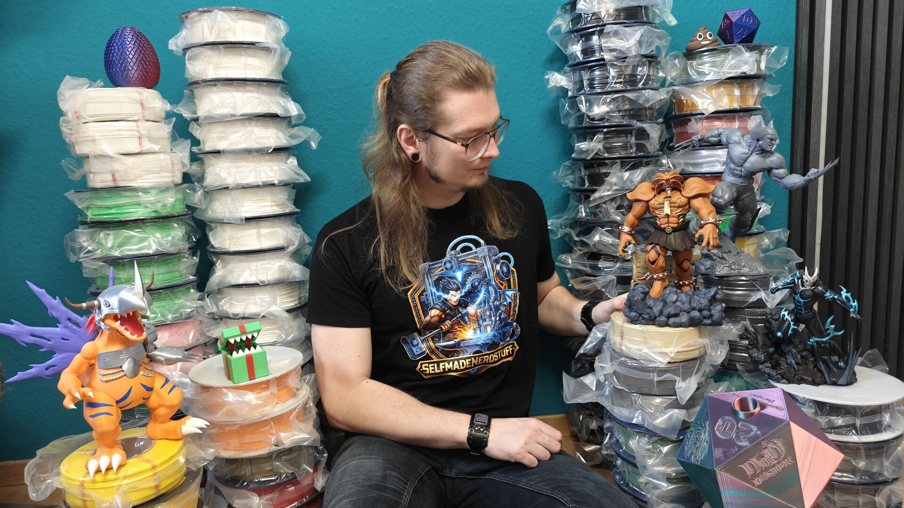

Vom Gamer zum Maker
Weil das Gebotene nicht das war, was ich suchte
Ich liebe Anime- und Gaming-Figuren. Doch bei offiziellem Merchandise hat mich oft gestört, dass entweder die Qualität zu wünschen übrig ließ oder das Preis-Leistungs-Verhältnis einfach nicht passte – oder beides. Die Lösung? Es selbst in die Hand nehmen! Ich wollte Figuren und Deko erschaffen, die genau meinen eigenen Vorstellungen entsprechen.
Aller Anfang ist... schmierig
Als 2021 mein erster Resin-Drucker einzog, dachte ich eigentlich, ich wäre gut vorbereitet. Ich hatte mich ewig in das Thema eingelesen und unzählige Videos geschaut. Aber die Praxis sah dann doch ganz anders aus: Man merkt erst beim Selbermachen, wie komplex und teilweise auch echt "schmierig" der ganze Arbeitsprozess mit dem flüssigen Kunstharz sein kann. Dazu kam das Temperaturproblem, denn Resin braucht eigentlich 25 bis 30 Grad, um richtig gut zu funktionieren. Nach einigem Tüfteln und Ausprobieren habe ich dann aber den für mich perfekten Weg gefunden, um auch bei kalten Temperaturen saubere Ergebnisse zu liefern.
Die Drucker-Flotte wächst (2024 - 2025)
2024 kam dann der nächste logische Schritt: Ein FDM-Drucker (für Filament). Mein Ziel war es, eigenes Gelände für Zombicide und meine Tabletop-Runden zu drucken, und genau dafür ist diese Art von Druck einfach perfekt.
2025 stand dann das bisher größte Upgrade an: Im Kunstharzbereich habe ich nochmal ordentlich aufgerüstet und mir eine Premium-Maschine geholt – den HeyGears Reflex RS Turbo.
Mit diesem Setup bin ich jetzt perfekt aufgestellt, um nicht nur für mich selbst, sondern für jeden, der möchte, genau das zu drucken, was das nerdige Herz begehrt.
Ein Blick in die Vitrine
Der Nerd hinter den Drucken

Hier folgt bald ein Video
Lust auf Selfmade Nerdstuff?
Schau dich gerne in meiner Galerie um oder wirf einen Blick auf die kommenden Projekte.
Schreib mir!